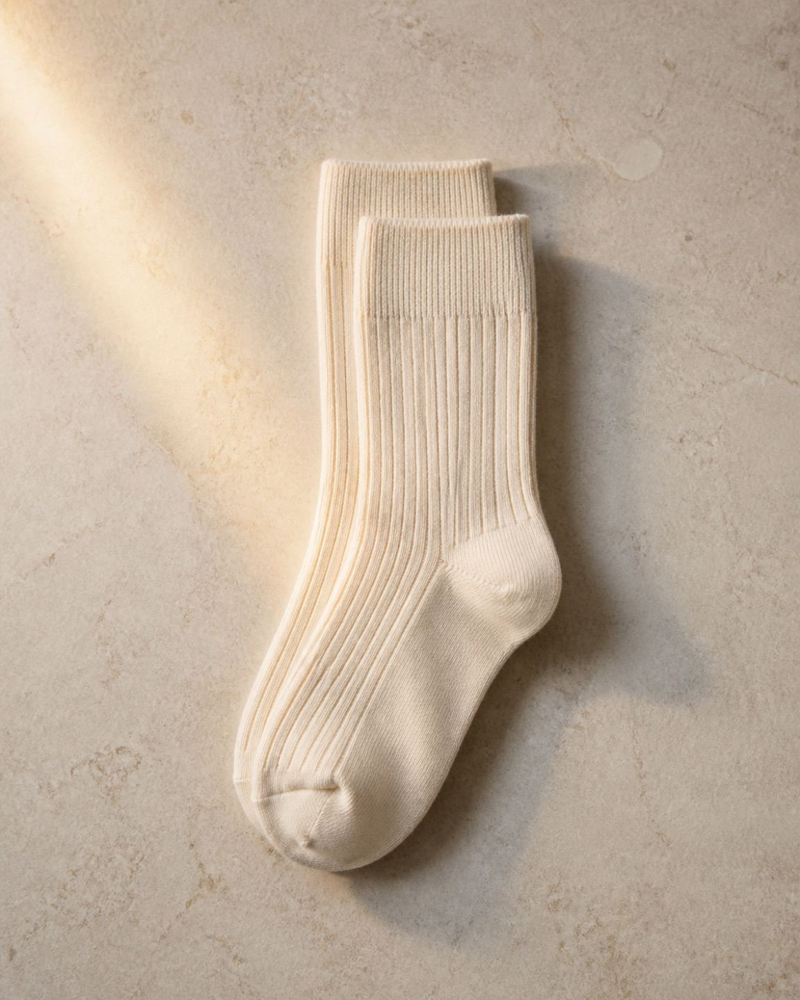

隠していた手を、
光のなかへ。
into the light
plate I — red earthAI生成サンプル・撮影素材差し替え前提
濡れることは、気持ちいい。
getting wet feels good
first product — study（AI生成サンプル）

first socks
ウール——濡れても、ぬくもりを手放さない。
craft — こだわりの覚書（開発中）
濡れても、ぬくもりを手放さない繊維。湿気を吸っては、ゆっくり返す。
厚みと弾みはリブで。ぐっしょりの日も、履き心地が沈まないように。
濡れている時間ごと、気持ちよくする。それだけを、まんなかに。
最初の一足は、これから。仕様は、仲間の声とともに決めていきます。
汗を、恥と呼ぶのをやめる。 濡れることは、気持ちいい—— プールから上がった、あの解放をおぼえている。 手のひらの水も、おなじ水だ。 隠すためにつかってきた時間を、 称えるために、つかいなおす。 私たち、妖怪。 汗かいて行こうぜ。
隠していた手を、
光のなかへ。
into the light
汗も、おなじ水。
sweat is the same water
濡れて、ひらく。
soaked, and open
私たち、妖怪。
汗を、称えるものへ。
embrace sweat
YOKAIは、手掌多汗症レベル10の当事者がつくる、汗を称えるブランド。ウールの靴下から始めます。多汗症とともに生きる人は、世界に3.65〜3.85億人（推計）——あなたひとりの体質ではありません。